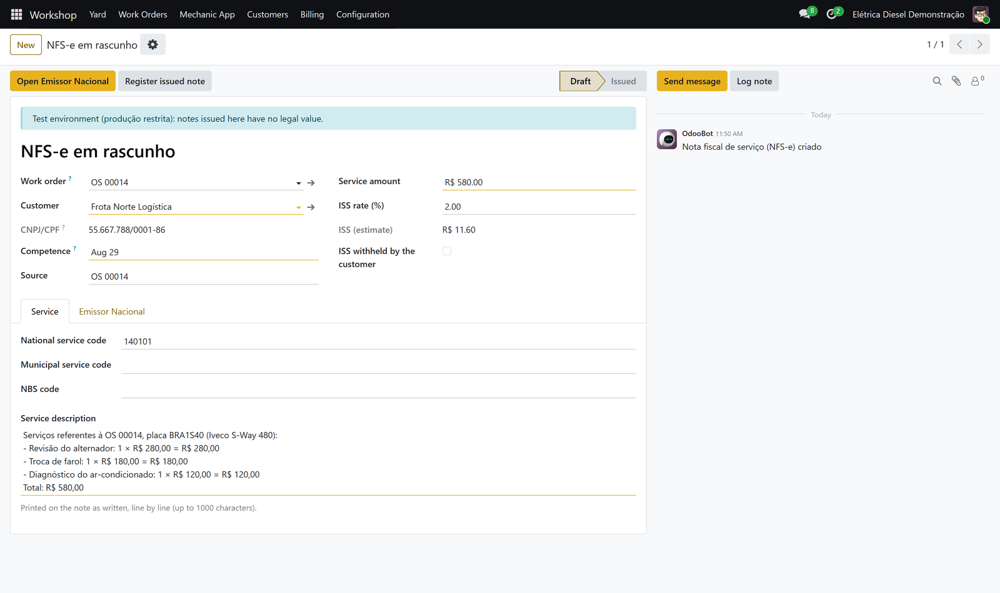
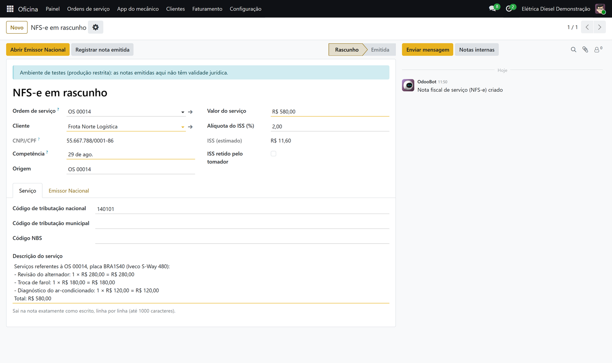

Oficina OS · NFS-e
Connects Oficina OS to NFS-e Nacional Brasil. It installs by itself when both are installed.

Liga o Oficina OS à NFS-e Nacional: a OS concluída ou o fechamento mensal da frota vira NFS-e com um clique, com a descrição discriminada por serviço e sem as peças, que são faturadas como mercadoria. Uma OS ou um fechamento nunca é faturado duas vezes.

Free with the two modules it connects. Licence: OPL-1.